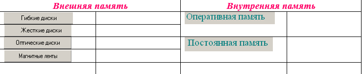
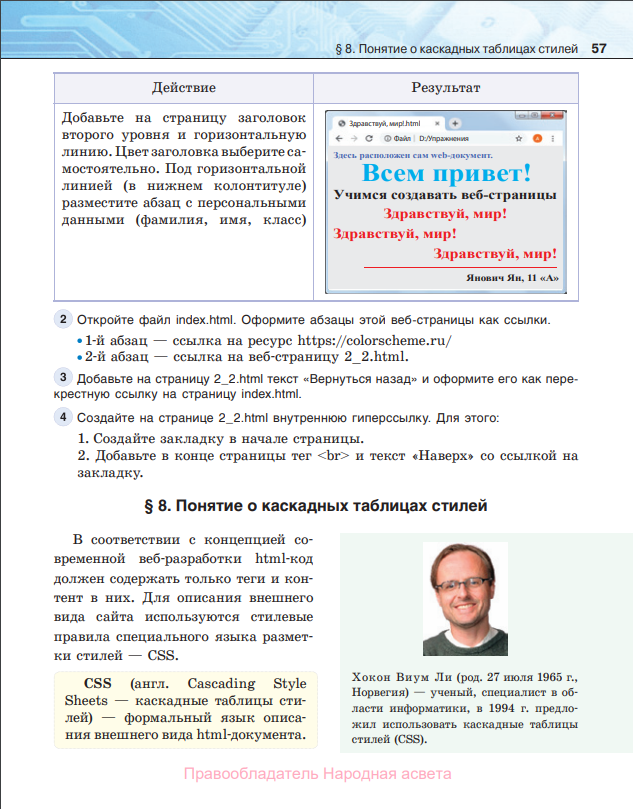
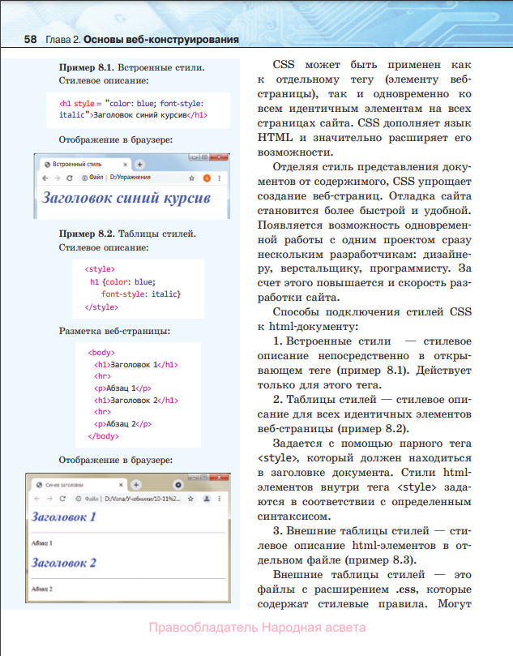
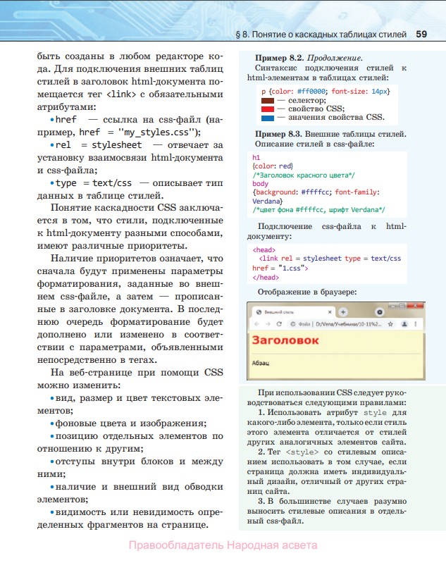
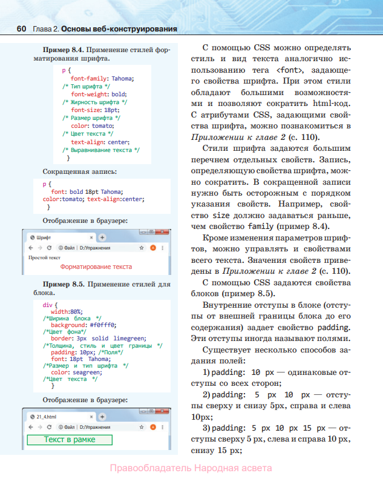
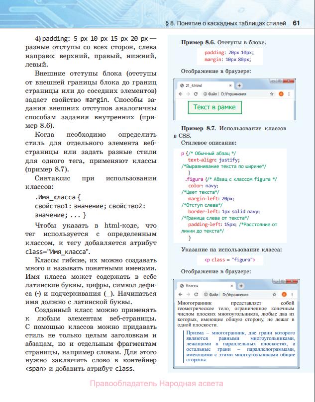
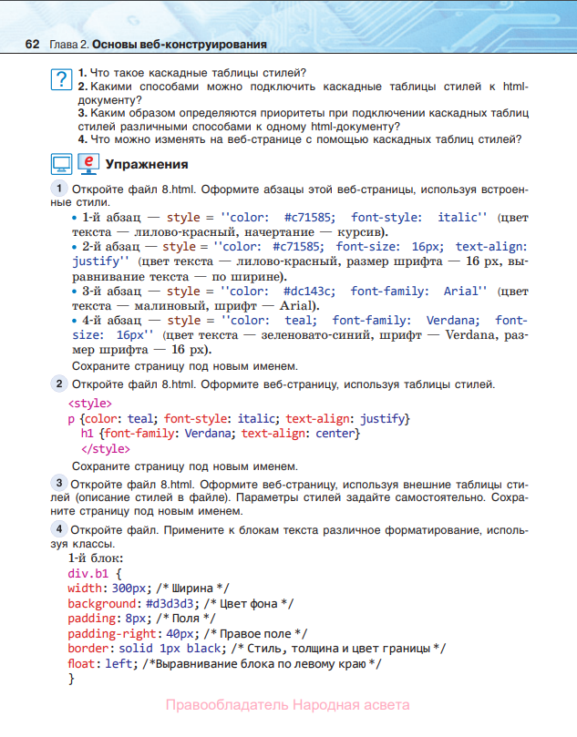
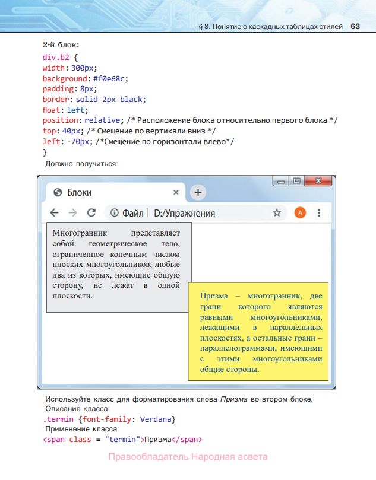
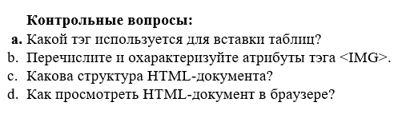

Основные теги разметки текста. Создание и форматирование таблиц.
Ход работы:
- 1. Ознакомьтесь с теоретическими сведениями.
- 2. Создайте первую web-страницу, используя Microsoft Word.
- 3. Откройте Microsoft Word, создайте документ и вставьте в него таблицу, текст и изображение предложенную преподавателем:

- 4. Текст и рисунки для работы использовать из программы
- 5. Сохраните документ при помощи опции File – Save As.
- 6. Откройте эту страницу, используя интернет-браузер .
- 7. Обратите внимание на различия между документом в Word и интерпретацией его в браузере.
- 8. Откройте еще раз файл HTML l c помощью редактора типа ASCII (например, Блокнот).
- 9. Внесите в HTML код страницы следующие изменения: добавьте в таблицу строки и дополните таблицу, содержимое строк – по центру.
- 10. Посмотрите исходный код HTML .
- 11. Откройте интернет-браузер;
- 12. Зайдите на сайт http://www.w3.org;
- 13. На панели меню интернет - браузер выберите Вид > Просмотр HTML –кода.
- 14. Сохраните файл в папке HTML под именем ПР 19.
- Для тех, кто забыл учебник:







- Ответьте на контрольные вопросы:

|